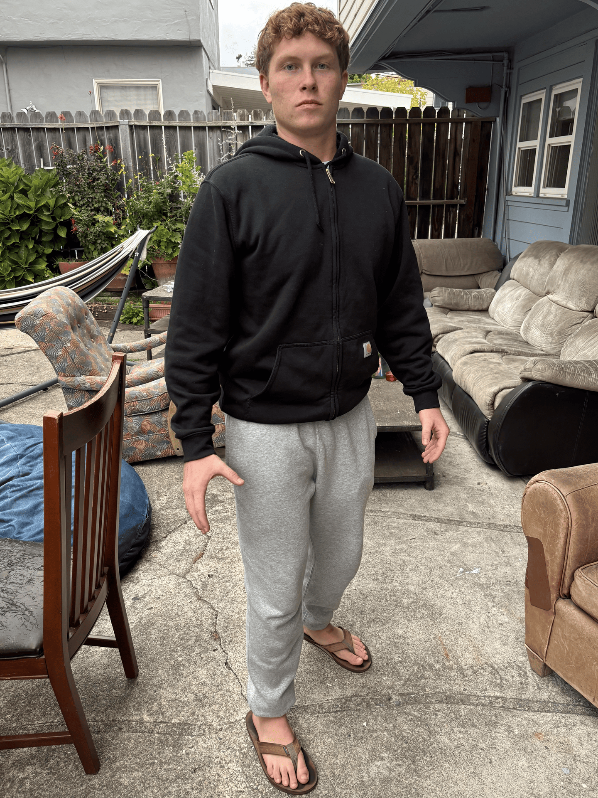

Project 0
Part 1


Part 2


In both Parts 1 and 2, photos taken from farther away appear flatter than photos taken from close-up. This is because in pictures taken close-up, small changes in the distance between objects have a larger relative difference in distance to the camera than they do in photos taken from afar. Which photography strategy makes more sense depends on the subject. For instance, the flatter photo of a person is more appealing because it makes the face look symmetrical. On the building, however, the photo taken from closer gives the building more depth and makes it appear more imposing.
Part 3

This Dolly Zoom utilizes the effect described above to make it appear as though Charlie is casting a spell to bring his surroundings closer to him. In reality, the photos of him are being taken from progressively farther away so that the background appears flatter with him. As the photos get farther, the camera zooms in more to keep Charlie the same size.